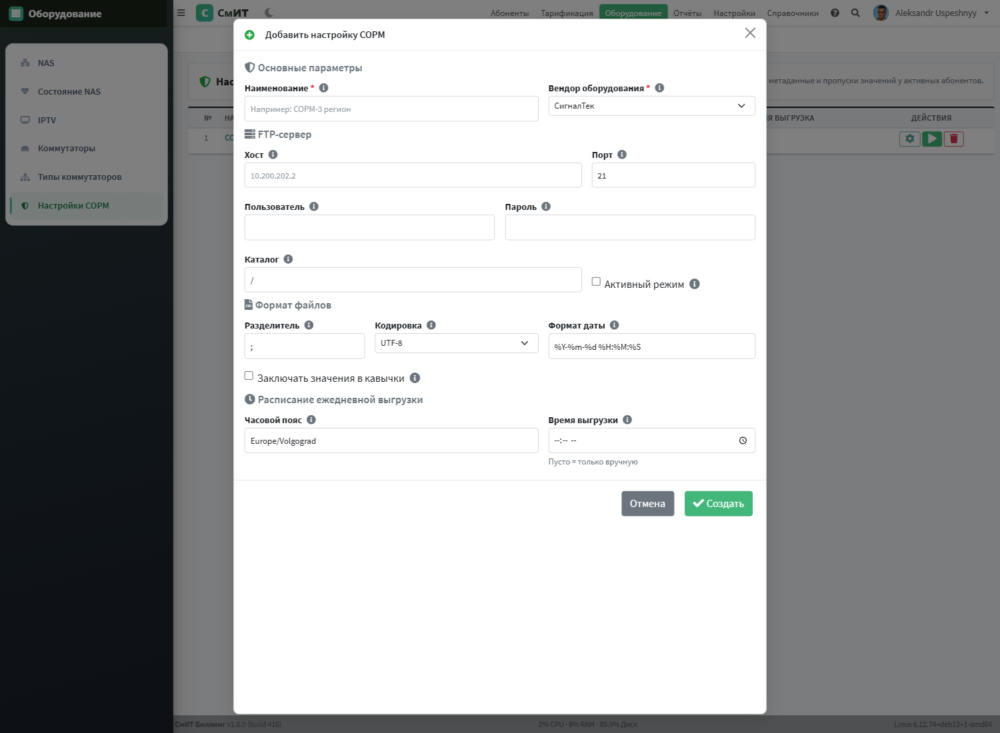
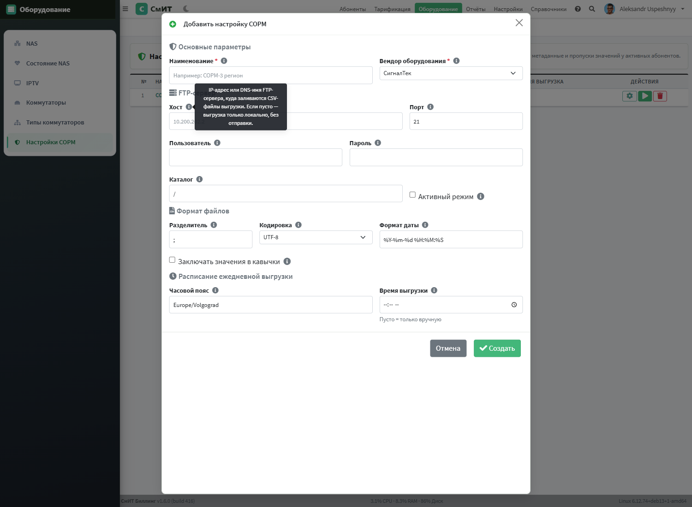

Интеграция с СОРМ3
Интеграция с системами оперативно-розыскных мероприятий (СОРМ) реализована в соответствии с Приказом Минкомсвязи России № 573 от 29.10.2018, устанавливающим требования к «техническим и программным средствам информационных систем, содержащих базы данных абонентов оператора связи».

Содержание страницы
- Принцип работы
- Интегрированные решения
- Ожидающие интеграции
- Настройка подключения
- Отчёты и SQL
- Расписание автоматической выгрузки
- Управление отчётами (build 88+)
- СОРМ-метаданные UserAttributes build 410-411
- Pre-flight валидация перед выгрузкой build 410
- Дубликаты атрибутов и команда merge
- REST API проверки готовности
- Схемы настройки

Принцип работы
Система СмИТ Биллинг 1.6 не подключается напрямую к центрам оперативного управления ФСБ. Вместо этого используются сторонние сертифицированные решения, выступающие посредниками между биллинговой системой и органами.
Выгрузка данных реализована как Celery-задача и передаётся в базы данных СОРМ-систем по протоколу FTP в формате CSV и его модификациях:
- Разделитель полей — точка с запятой (
;). - Текстовые значения — в кавычках.
- Кодировка — UTF-8 или Windows-1251 (в зависимости от требований СОРМ-системы).
- Расписание выгрузки — настраивается (обычно каждые 5-15 минут).
Выгружаемые данные включают:
- Персональные данные абонентов (ФИО, паспортные данные, адрес регистрации).
- Данные об услугах и договорах.
- IP-адреса и сессии подключения (логин, начало/конец сессии, NAT-трансляции).
- Данные о платежах и балансе.
Интегрированные решения
С рядом поставщиков СОРМ-оборудования отлажены и протестированы интегрированные решения. Интеграция включает настроенные шаблоны выгрузки, протоколы передачи и форматы данных, соответствующие требованиям конкретного производителя.
Ожидающие интеграции
СОРМ «Якорь» (компания НЕОС) — находится в процессе интеграции. Планируется поддержка стандартного протокола обмена данными. Для получения информации о статусе интеграции обращайтесь в техническую поддержку.
Настройка подключения
Перейдите в раздел Оборудование → Настройки СОРМ (/admin/equipment/sorm_list/) и нажмите «+ Добавить». Откроется модальное окно с формой создания новой конфигурации — без перехода на отдельную страницу.
Модальное окно «Добавить настройку СОРМ» build 415-417
Форма разделена на 4 секции и содержит подсказки (серая иконка i рядом с подписью каждого поля) — наведите курсор для пояснения значения и формата.

Tooltip-подсказка (пример для поля «Хост»):

Секции и поля модалки
| Секция | Поле | Описание / подсказка из tooltip |
|---|---|---|
| Основные | Наименование * | Произвольное имя конфигурации, используется в списке и в логах. Пример: «СОРМ-3 регион Волгоград» или «СОРМ резервный» |
Вендор оборудования * | Поставщик СОРМ-3 системы: СигналТек, НОРСИ 2020, СпецТехПитон, МФИ Софт, Элком НТ, VAS Experts. Влияет на список и формат отчётов | |
| FTP-сервер | Хост | IP-адрес или DNS-имя FTP-сервера, куда заливаются CSV-файлы. Если пусто — выгрузка только локально, без отправки |
Порт | TCP-порт FTP. Стандартный — 21. Меняйте только если приёмная сторона использует нестандартный порт | |
Пользователь | Имя FTP-аккаунта, выданное оператором СОРМ для загрузки файлов | |
Пароль | Пароль FTP-аккаунта. Хранится в БД в открытом виде, доступ к настройкам — только администратору | |
Каталог | Путь к каталогу на FTP, куда сохраняются файлы. По умолчанию /. Указывается относительно корня FTP-аккаунта | |
Активный режим | Активный FTP (PORT) — соединение для данных открывает сервер. Пассивный (PASV, по умолчанию) — клиент. Включайте только если приёмная сторона требует именно PORT | |
| Формат файлов | Разделитель | Символ-разделитель колонок в CSV. Стандарт СОРМ-3 — точка с запятой ;. Для табуляции — \t |
Кодировка | UTF-8 — современный стандарт. Windows-1251 — для старых СОРМ-приёмников, не понимающих UTF | |
Формат даты | Шаблон вывода даты/времени по правилам Python strftime. По умолчанию %Y-%m-%d %H:%M:%S | |
Заключать в кавычки | Если включено — каждое значение оборачивается двойными кавычками. Включайте только если приёмник этого требует | |
| Расписание | Часовой пояс | Зона из базы IANA (Europe/Volgograd, Europe/Moscow, Asia/Yekaterinburg и т. д.). Время выгрузки и метки в файлах считаются по этому поясу |
Время выгрузки | Когда (по указанному поясу) запускается ежедневная выгрузка. Пустое поле — автозапуск отключён, доступен только ручной запуск кнопкой ▶ |
/admin/equipment/sorm_list/<id>/) — там можно создать отчёты, запустить «Первоначальную настройку» и проверить готовность данных.
Отчёты и SQL
Каждая СОРМ-запись содержит список отчётов — это именованные SQL-запросы, результат которых выгружается в CSV и отправляется на FTP.
Для каждого отчёта задаются:
- Наименование — произвольное название отчёта
- Префикс файла — начало имени файла на FTP (например
abonents→ файлabonents_20260315_143000.csv) - Расширение файла — по умолчанию
csv - SQL запрос — произвольный SELECT к базе данных биллинга. Первая строка результата станет заголовком CSV
- Периодичность — расписание автоматической выгрузки
Стандартные отчёты СОРМ-3 (build 324)
При нажатии кнопки «Первоначальная настройка отчётов» создаются 13 стандартных отчётов в формате, совместимом с Carbon 4:
| Префикс файла | Описание | Формат |
|---|---|---|
ABONENT | Абоненты (ФИО, договор, статус, тип) | SORM-3: IDENT, ACTUAL_NAME, STATUS, NETWORK_TYPE |
ABONENT_IDENT | Идентификаторы (логин, IP, MAC) | IP в hex (uf_ip2hex), маска FFFFFFFF |
ABONENT_SRV | Услуги абонентов | ID услуги, дата начала, договор |
ABONENT_USER | Учётные записи | USER_NUMBER, USER_NAME |
ABONENT_ADDR | Адреса подключений | CITY, STREET, BUILDING, APARTMENT |
PAYMENT | Платежи | Сумма, телефон, адрес, тип |
SUPPLEMENTARY_SERVICE | Каталог услуг | MNEMONIC, скорость в описании |
REGIONS | Регионы | ID=3, ООО "СМИТ" |
DOC_TYPES | Типы документов | Из USER_ATTRIBUTES |
PAY_TYPES | Типы оплаты | ЮKassa, Wallet One, SberPay, Касса, QIWI |
IP_PLAN | IP-план | IP в hex, маска в hex, REGION_ID=3 |
IP_GATEWAY | IP шлюзов | GATE_ID, IP hex, порт |
GATEWAY | Шлюзы (NAS) | GATE_ID, описание, тип=7 |
uf_ip2hex(text) — IP в шестнадцатеричный формат,
uf_mask2hex(int) — маска сети в hex,
uf_date2sorm(timestamp) — дата в формате YYYY-MM-DD HH:MI:SS.
Разделитель полей: ; (точка с запятой).
Расписание автоматической выгрузки
Celery Beat проверяет расписание каждые 10 минут и автоматически запускает отчёты согласно настроенной периодичности:
| Значение | Периодичность | Когда запускается |
|---|---|---|
Вручную | — | Только при ручном запуске из интерфейса |
Каждые 10 минут | 600 сек | При каждой проверке |
Каждый час | 3600 сек | В начале каждого часа (минута < 10) |
Ежедневно | 86400 сек | В 00:00 ночи |
Ежемесячно | — | 1-го числа в 00:00 |
Каждый отчёт выполняется как отдельная Celery-задача billing.tasks.sorm_export.export_sorm_report. При ошибке задача повторяется до 2 раз с интервалом 60 секунд.
Управление отчётами (build 88+)
Страница отчётов: /admin/equipment/sorm_list/1/reports/. Все операции выполняются через модальные окна без перехода на другие страницы.
Таблица показывает: название, описание содержимого, имя файла, периодичность. На мобильных устройствах дополнительные колонки компактно отображаются под названием.
Действия
- ▶ Выполнить — открывает модальное окно с выбором режима:
- В браузер — выполняет SQL и отображает результат в таблице прямо в модале (для проверки данных)
- FTP — формирует CSV и отправляет файл на FTP-сервер. Показывает имя файла, количество строк, статус
- CSV — скачивает файл в браузер
- ✏ Редактировать — модальное окно с SQL-редактором, настройкой периодичности, префикса файла. Доступны функции:
uf_ip2hex(),uf_mask2hex(),uf_date2sorm() - 🗑 В архив — мягкое удаление с возможностью восстановления из блока «Архив»
СОРМ-метаданные UserAttributes build 410-411
Содержание раздела
До build 410 SQL-запрос отчёта ABONENT_LEGAL содержал захардкоженные имена реквизитов в условиях WHERE NAME='ИНН', 'КПП', 'ОГРН', и т.д. Любое переименование атрибута в /admin/dictionary/UserAttributes/ молча ломало выгрузку — отчёт продолжал работать, но возвращал NULL для всех абонентов.
Начиная с build 410 SQL отчётов СОРМ генерируется автоматически через сервис billing.services.sorm_sql.SormReportBuilder, который читает метаданные прямо из записей UserAttributes:
| Поле | Тип | Назначение |
|---|---|---|
is_sorm | BOOLEAN | Атрибут участвует в СОРМ-отчётности (build 407) |
sorm_field_code | VARCHAR(64) | Техническое имя колонки в SQL/CSV: inn, kpp, legal_address, director, passport_issued_by... |
sorm_report_types | VARCHAR(255) | CSV-список типов отчётов: ABONENT,ABONENT_LEGAL,ABONENT_IDENT,ABONENT_USER,ABONENT_ADDR |
sorm_required | BOOLEAN | Обязательное поле — pre-flight предупредит о пропусках значений |
sorm_alt_names | VARCHAR(512) | Альтернативные имена через ; для исторических дублей графем (например р/с;р/c) |
Builder выбирает все UserAttributes где is_sorm=True, sorm_field_code != '' и тип отчёта присутствует в sorm_report_types, упорядочивает по order_no и собирает SELECT-подзапросы. Для атрибутов с sorm_alt_names используется WHERE NAME IN (...) — это покрывает обе графемы одновременно (например на одной БД хранятся записи и с кириллической «р/с», и с латинской «р/c»).
/admin/dictionary/UserAttributes/ показывает красный щит для СОРМ-атрибутов и блокирует переименование без явного подтверждения. Запрос изменения имени возвращает HTTP 400 с флагом sorm_rename_blocked: true; UI просит подтвердить через диалог с предупреждением. Поле sorm_field_code валидируется регэкспом ^[a-z][a-z0-9_]*$.
Управление метаданными в UI
Открыть атрибут в модалке /admin/dictionary/UserAttributes/ и включить чекбокс «Участвует в СОРМ-отчётах» — появится секция «СОРМ-метаданные» с 4 полями:
- Техническое имя поля — латинские буквы/цифры/
_, первый символ — буква. Будет именем колонки в SQL и CSV-выгрузке. - Альтернативные имена графем — для исторических дублей (например
р/с;р/cгдескириллическое иcлатинское). - Типы СОРМ-отчётов — multi-checkbox: ABONENT / ABONENT_LEGAL / ABONENT_IDENT / ABONENT_USER / ABONENT_ADDR. В каких отчётах поле появляется как колонка.
- Обязательное поле — pre-flight валидация заблокирует выгрузку (выдаст предупреждение) при отсутствии значения у активных абонентов.
В таблице атрибутов цветовая индикация:
- Красный щит + tooltip с
field_code— атрибут полноценно настроен для СОРМ. - Жёлтый щит — флаг
is_sorm=True, ноsorm_field_codeпустой. Builder его пропустит — нужно дозаполнить метаданные. - Серая точка — обычный (не СОРМ) атрибут.
Текущая карта метаданных (build 411)
Миграции 0097_user_attributes_sorm_meta и 0098_sorm_meta_extra_legacy заполняют метаданные для 23 атрибутов из коробки:
| field_code | Атрибут | Отчёты | Required | Alt names |
|---|---|---|---|---|
inn | ИНН | ABONENT, ABONENT_LEGAL | да | — |
kpp | КПП | ABONENT_LEGAL | да | — |
ogrn | ОГРН | ABONENT, ABONENT_LEGAL | да | — |
legal_address | Юридический адрес | ABONENT_LEGAL | — | — |
physical_address | Физический адрес | ABONENT_LEGAL | — | — |
postal_address | Почтовый адрес | ABONENT_LEGAL | — | — |
bank_account | р/с (или р/c) | ABONENT_LEGAL | — | р/с;р/c |
bank_name | Банк | ABONENT_LEGAL | — | — |
bik | БИК | ABONENT_LEGAL | — | — |
corr_account | к/с (или к/c) | ABONENT_LEGAL | — | к/с;к/c |
legal_person | В лице | ABONENT_LEGAL | — | — |
director | Директор | ABONENT_LEGAL | да | — |
passport_series_number | Паспорт серия-номер | ABONENT, ABONENT_IDENT | да | — |
passport_issue_date | Паспорт дата выдачи | ABONENT_IDENT | — | — |
passport_issued_by | Паспорт кем выдан build 411 | ABONENT_IDENT | — | — |
passport_issued_by_date | Когда выдан | ABONENT_IDENT | — | — |
passport_registration | Паспорт регистрация build 411 | ABONENT_IDENT, ABONENT_USER | — | — |
reg_address | Адрес регистрации | ABONENT, ABONENT_USER | — | — |
birth_date | Дата рождения | ABONENT, ABONENT_IDENT | да | — |
birth_place | Место рождения | ABONENT_IDENT | — | — |
passport_series_legacy | Паспорт серия (legacy) | ABONENT_IDENT | — | — |
passport_number_legacy | Паспорт № (legacy) | ABONENT_IDENT | — | — |
passport_issue_date_legacy | Паспорт когда выдан (legacy) | ABONENT_IDENT | — | — |
Pre-flight валидация перед выгрузкой build 410
На странице /admin/equipment/sorm_list/ добавлена кнопка «Проверить готовность». Она вызывает endpoint GET /admin/equipment/sorm_list/validate/ и показывает в модалке две группы проблем:
Проблемы метаданных (meta_issues)
missing_field_code— атрибут сis_sorm=True, ноsorm_field_codeпустой. Builder его пропустит, данные потеряются в выгрузке.invalid_field_code—field_codeне соответствует регэкспу^[a-z][a-z0-9_]*$. Чаще всего — пробелы, кириллица, тире.duplicate_field_code— два разных атрибута имеют один и тот жеfield_codeв одном и том же отчёте. Builder выберет один черезLIMIT 1непредсказуемо.
Пропуски обязательных полей (data_issues)
Для каждого sorm_required=True атрибута проверяется сколько активных абонентов без заполненного значения. Юр-поля (ABONENT_LEGAL) проверяются только у юр.лиц (company=True); физ-поля (passport_series_number, birth_date) — только у физических лиц.
Пример вывода на проде testbill (build 411):
| report_type | field_code | attribute_name | missing |
|---|---|---|---|
| ABONENT_LEGAL | director | Директор | 280 |
| ABONENT_LEGAL | inn | ИНН | 241 |
| ABONENT_LEGAL | kpp | КПП | 280 |
| ABONENT_LEGAL | ogrn | ОГРН | 242 |
Бейдж готовности на странице build 412
В верхней панели страницы /admin/equipment/sorm_list/ появился сводный бейдж готовности — показывает результат последней проверки и время:
- Все данные готовы — нет ни meta_issues, ни data_issues.
- Пропусков: N — есть data_issues (значения), но метаданные в порядке.
- Проблем: M meta + N data — есть проблемы метаданных, требует исправления до выгрузки.
Pre-flight в Celery-задаче выгрузки
Pre-flight также интегрирован в billing.tasks.sorm_export.run_report_export: перед запуском выгрузки в логах появляется warning:
EXPORT pre-flight: report=33 meta-issues=0
EXPORT pre-flight: report=33 missing-values=1043 in 4 fieldsСообщение в результате задачи также обогащается строкой pre-flight: пропуски в 4 полях (1043 абонентов) — оператор увидит её в UI запуска отчёта.
Дубликаты атрибутов и команда merge
На некоторых базах (миграция из EBS / Carbon 4) могут быть два атрибута с одинаковым именем — например «Директор» с id=10 и id=-219000. Без дедупликации builder выбирает значение через LIMIT 1 непредсказуемо — для одного абонента может выгрузиться значение из дубля, для другого — из канонической записи.
Команда manage.py merge_sorm_attribute_dups группирует атрибуты по sorm_field_code, выбирает каноническую запись (наименьший положительный pk) и переносит все AttributeValues с дублей через UPDATE attribute_id=...:
# Dry-run — только показать что будет сделано:
python manage.py merge_sorm_attribute_dups
# Применить (ОБЯЗАТЕЛЬНО pg_dump перед!):
python manage.py merge_sorm_attribute_dups --apply
# Только одна группа:
python manage.py merge_sorm_attribute_dups --field-code director --apply
# Группировка по name (для legacy без field_code):
python manage.py merge_sorm_attribute_dups --by-name --applyПример вывода (testbill, build 411):
Найдено 1 групп дубликатов:
Группа «director» (2 записей):
id= -219000 name='Директор' values=97
id= 10 name='Директор' values=96 ←canonical
→ перенесено 97 AttributeValues, удалено 1 дублей
Готово: удалено 1 дубликатов, перенесено 97 значений на canonical-записи.REST API проверки готовности
Endpoint GET /admin/equipment/sorm_list/validate/ возвращает JSON со структурой:
{
"ok": true,
"has_problems": true,
"meta_issues": [
{
"kind": "missing_field_code",
"attribute_id": 13,
"attribute_name": "Паспорт №",
"message": "СОРМ-атрибут без sorm_field_code"
}
],
"data_issues": [
{
"report_type": "ABONENT_LEGAL",
"field_code": "inn",
"attribute_name": "ИНН",
"attribute_id": 4,
"missing": 241
}
]
}Аутентификация: стандартная сессионная (Django @login_required). Доступен любому залогиненному пользователю; выдаёт информацию которая не зависит от прав абонент-папок.
Это удобный endpoint для интеграций — например, мониторинг (Zabbix / Grafana) может опрашивать его через cron и алёртить когда has_problems == true или когда data_issues содержит обязательные поля с большим числом пропусков.
Схемы настройки
- Стандартная схема Настройка передачи данных по стандартной (типовой) схеме. Используется для сертифицированных СОРМ-систем с предопределённым форматом обмена. Включает настройку FTP-соединения, расписание выгрузки, выбор набора данных и формат CSV-файлов. Подходит для большинства интеграций.
- Пользовательская схема Создание индивидуальных схем передачи данных для нестандартных СОРМ-систем. Позволяет настроить произвольный формат выгрузки: выбор полей, порядок столбцов, кодировку, разделители, формат дат. Используется при интеграции с СОРМ-системами, не поддерживающими стандартный формат.